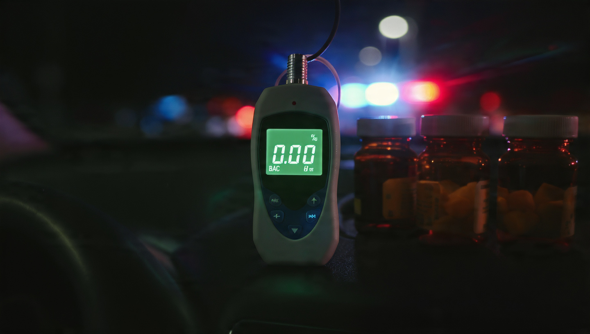

1 in 4 Impaired Fatal Crash Drivers Would Pass a Breathalyzer

According to the toxicology reports, 24,160 drivers involved in fatal crashes between 2014 and 2023 tested positive for drugs but negative for alcohol. Blow into the tube: 0.00, walk the line: straight, drive away: legally sober, chemically not.
FARS tracks three toxicology columns per vehicle model: alcohol-positive, drug-positive, any-impaired. Run the subtraction NHTSA never publishes and you get the drug-only count. Across 490,736 drivers in fatal crashes over a decade, the scoreboard reads:
- Sober: 392,388 (80.0%)
- Alcohol-only: 55,852 (11.4%)
- Drug-only: 24,160 (4.9%)
- Both alcohol and drugs: 18,336 (3.7%)
Breathalyzers, interlocks, BAC limits, and sobriety checkpoints can theoretically reach 74,188 of those impaired drivers, which covers 75.4% of them. Not bad. The other 24,160 could have been stopped at every DUI checkpoint between Portland and Miami and never once triggered an alert.
The vehicles where drugs outpace alcohol
By vehicle class, the drug-only rate is so flat it is boring: sports cars at 5.3%, vans at 4.7%, six-tenths of a point across the entire taxonomy. If you stopped there, you would conclude that drugs are an equal-opportunity impairment vector, and you would be wrong.
The Nissan NV200 is a commercial delivery van with the aerodynamic profile of a refrigerator, a drug-only rate of 7.5%, and an alcohol-only rate of just 6.6%. More of its impaired fatal crash drivers were on drugs alone than alcohol alone.[1] A breathalyzer at 2 PM on a Tuesday clears every one of them.
The Mercedes M-Class posts a perfect split: 7.6% drug-only, 7.6% alcohol-only. Coin flip. At the scene, you have even odds of guessing which substance the impaired driver was on, and a breathalyzer resolves exactly half the mystery.
Top of the drug-only leaderboard: Buick Verano at 8.3%, nearly double the national 4.9% average, with Acura Integra close behind at 8.0%. Dodge Avenger at 7.1% across 877 fatal crash drivers, a sample too large to wave away as noise.[1]
What a breathalyzer cannot measure
Oxycodone, methamphetamine, alprazolam, THC, fentanyl, gabapentin: a Dräger 6820 sees none of them. It measures ethanol in exhaled breath, and that is the end of its vocabulary.
An officer with Drug Recognition Expert credentials can spot physiological signs of drug impairment, but only about 10,000 officers hold DRE certification in the United States.[2] There are roughly 500,000 patrol officers. That's 2%. The remaining 98% rely on a device with a one-substance vocabulary at checkpoints where multi-substance impairment is the emerging norm.
Oral fluid testing kits exist, and a handful of states authorize them roadside, but no device in widespread use delivers what the breathalyzer delivers for alcohol: a quantified, court-ready number in under two minutes. NHTSA has been developing a drug impairment protocol using the National Advanced Driving Simulator, but that project targets prescription labeling guidelines, not patrol cars.[3]
Why the real number is worse
The CDC puts the substance testing rate for seriously injured drivers at 54%.[4] For FARS specifically, known BAC results exist for just 38% of fatally injured drivers as of 2021. Drug testing is patchier still: Mississippi screens 9% of its fatal crash drivers. South Dakota screens 81%.[5]
NHTSA fills the gaps with discriminant analysis, but that model was calibrated on alcohol data, and its drug estimates carry wider error bars that nobody prints on the chart.
If untested drivers match the tested population (a conservative assumption, since low-testing states also tend to underinvest in toxicology labs), the actual drug-only count over this decade exceeds 24,160. That's the floor. Not the ceiling.
What this means if you drive
Check your medicine cabinet. Ambien, hydrocodone, certain antihistamines, muscle relaxants, benzodiazepines: they all carry driving impairment warnings that most patients treat as decoration, and FARS does not distinguish between illicit methamphetamine and prescribed Adderall. Some fraction of those 24,160 drug-only drivers were taking exactly what their doctor ordered, at the exact dose prescribed, and killing people.
If your state is debating lower BAC limits (Utah dropped to 0.05 in 2018; the Governors Highway Safety Association wants the rest of the country to follow[6]), ask one question: what about the quarter of impaired drivers that BAC limits cannot touch? Lowering the threshold to 0.05 expands enforcement against the third beer. The oxycodone behind the wheel of a Buick Verano? Invisible.
Methodology and limitations
Impairment decomposition computed from FARS 2014 to 2023 toxicology data across 337 vehicle models. Drug-only count derived as: (any-impaired drivers) minus (alcohol-positive drivers). This assumes no driver is classified any-impaired without being either alcohol-positive or drug-positive, which is consistent with FARS coding rules.
Critical caveat: drug-positive does not mean drug-impaired, because THC is detectable for days to weeks after last use, and some medications produce positive results at therapeutic doses that may not meaningfully affect driving. Unlike alcohol, where BAC directly predicts impairment severity, drug presence has a much weaker causal link to crash causation. The 24,160 figure counts drivers who had drugs in their system at the time of a fatal crash, not drivers whose crash was caused by drug impairment.
Testing is not universal, and states with low testing rates systematically undercount drug impairment. Model-level rates reflect tested populations and may not generalize to untested drivers of the same vehicle, so sample sizes below 300 should be interpreted with caution.
Statistical analysis performed with computational assistance.